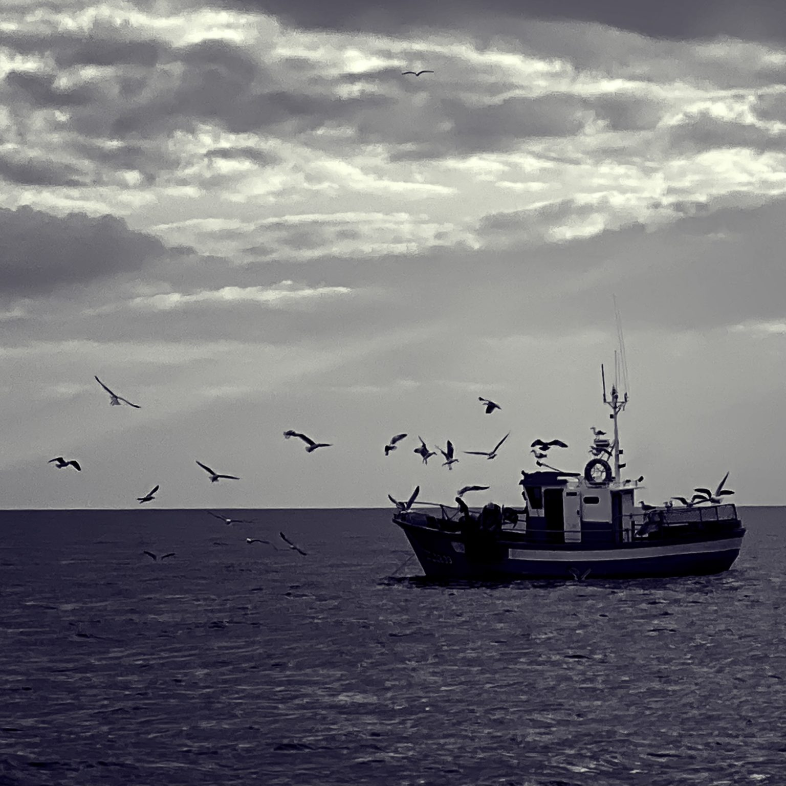
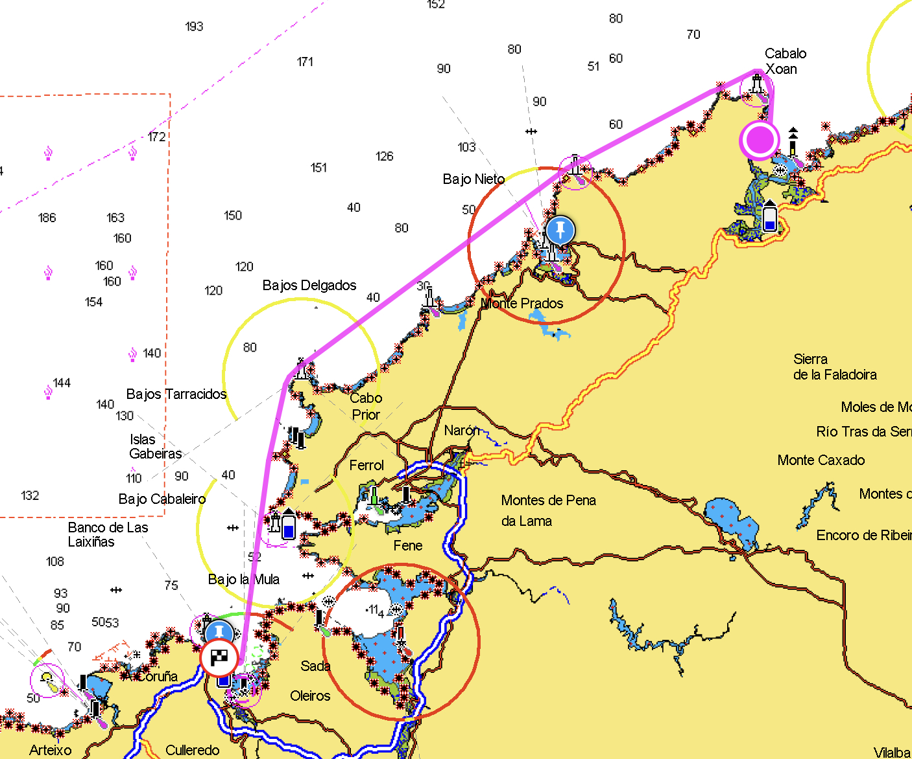
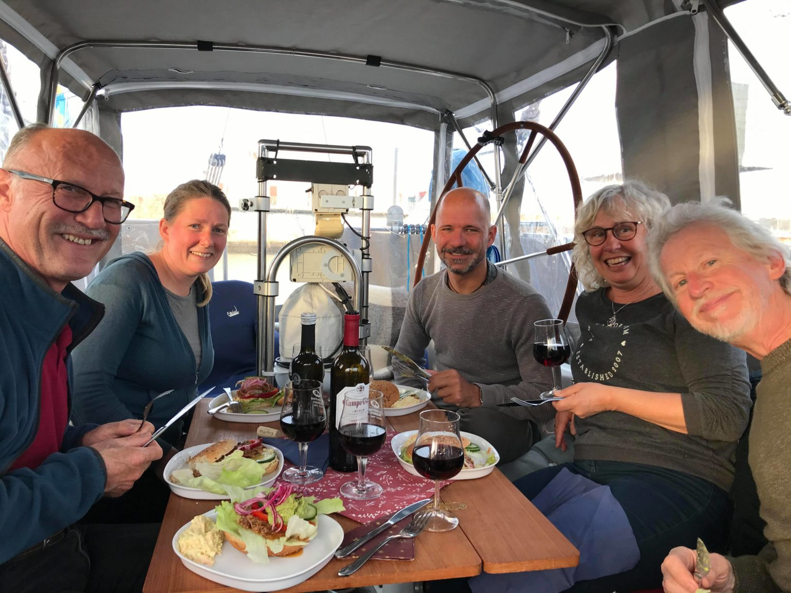

The anchorage in Cariño just before sun rise
The anchorage in Cariño just before sun riseThe day was a much brighter day than the day before when we decided to turn around to Cariño rather than beating against the wind to Cedeira. We pulled up the anchor just before sunrise and motored out to the open sea again.
The anchorage in Cariño just before sun rise
This was the day we were going to finally reach A Coruña. The first time we almost got there was in September when we were in Roscoff and almost crossed from there to A Coruña over the Bay of Biscay but last minute decided to go around on the inside of the bay instead. The next time was in the beginning of November when we were trying to decide wether to stay in Gijon for the winter or keep going to A Coruña instead. They say that “third time’s a charm” so this time we were going to get there for sure.

Fishermen out working in the morning
The distance to A Coruña was 41 nm and for us that is a long distance especially if we don’t have good sailing winds but have to motor.

We tried hoisting the sails twice during the day but with no success, there was almost no wind and the little wind there was just kept changing direction. At the end of the day the wind picked up a bit and with a preventer we could at least keep the main sail up and in combination with the engine we did 5-6 knots of speed and got to A Coruña about half an hour earlier than expected. When we got there our German friends Anja and Manfred on AnMa was waiting for us. We’d had a good but long day in the sun so when Anja offered to cook dinner while we sorted out the boat and went to the harbour office to let them know that we had arrived we accepted her offer without hesitation.
We stayed in A Coruña for twelve nights in the inner marina, Real Club Náutico de La Coruña. The marina is situated right in the city center and Ana in the office is really nice and helpful. Our German friends Anja and Manfred even got to borrow her car to go to Ikea. We spent a few days walking around getting to know the town and we were really happy to find an asian store where we could buy some thai red curry paste and a few other things. We made some new friends in A Coruña, two Swedish couples, Karin and Richard on Beyond and Berit and Danilo on Corisco and a Swiss couple, Andy and Bea on Extra Mile.

From the left Danilo, Mia, Tony, Berit, Richard and Karin behind the camera having dinner on Beyond
After four months in Gijon by ourselves it was almost a shock for us “having to” socialize with all these people. But it was of course really nice. When it was time to pay for our stay in A Coruña we ended up only paying for ten nights with a 20 % discount, that’s the third marina in a row that gave us a far better price than they had to.